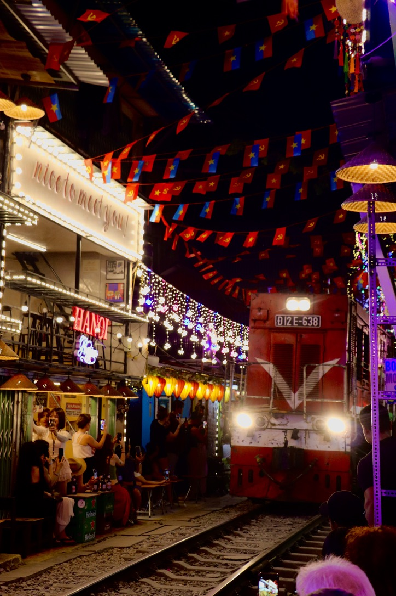
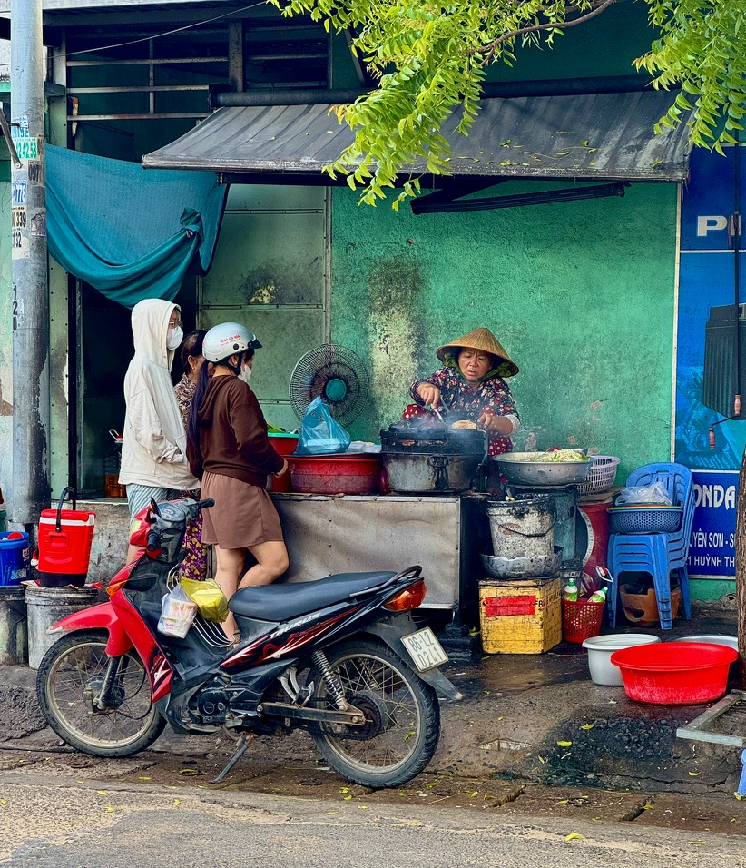

Étape 1
Hanoï
7 joursVieux quartier, Train Street depuis le Café Chill 69 et beaucoup de temps pour absorber le joyeux chaos de la ville. Sept jours n’étaient pas prévus : nous attendions ma sœur. Pour un premier passage, je conseillerais plutôt quatre à cinq jours.
Notre avisUn vrai coup de cœur. Nous avons préféré Hanoï à Hô Chi Minh-Ville.
Vieux quartierTrain StreetCafés vietnamiens